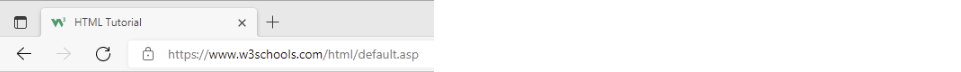
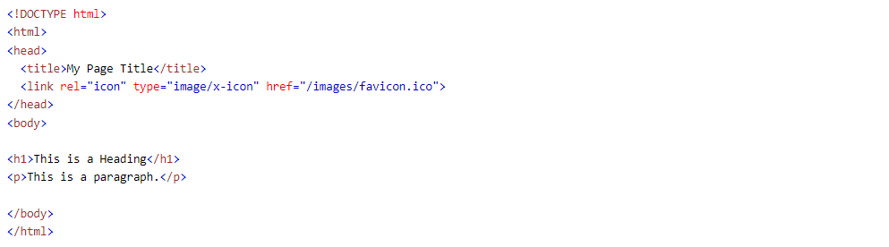

Icono de favoritos HTML
Un favicon es una pequeña imagen que se muestra junto al título de la página en la pestaña del navegador.
Cómo agregar un favicon en HTML
Puedes usar cualquier imagen que te guste como favicon. También puedes crear tu propio favicon en sitios como https://www.favicon.cc .
Consejo: Un favicon es una imagen pequeña, por lo que debe ser una imagen simple con alto contraste.
Una imagen de favicon se muestra a la izquierda del título de la página en la pestaña del navegador, de la siguiente manera:
Para agregar un favicon a su sitio web, guarde la imagen de su favicon en el directorio raíz de su servidor web o cree una carpeta en el directorio raíz llamada imágenes y guarde la imagen de su favicon en esta carpeta. Un nombre común para una imagen de favicon es "favicon.ico".
A continuación, agregue un link elemento a su archivo "index.html", después del title elemento, de esta manera:
Ejemplo
Ahora, guarde el archivo "index.html" y vuelva a cargarlo en su navegador. La pestaña de su navegador debería mostrar ahora la imagen de su favicono a la izquierda del título de la página.